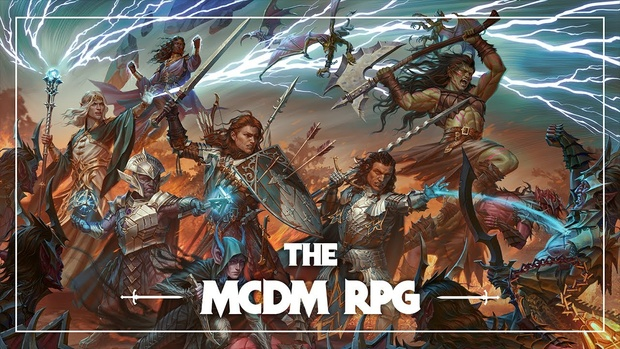

A primer for players of my game
A large country surrounded by the cold hinterlands on the north, a sea on the west. Before Nikan was an empire, it was a collection of small monastic peoples. Then a millennial ago the Red Emporer slowly conquered half the continent including Nikan. He established a common language, built roads and generally introduced modern technology into the region. This resulted in the homogenization of the region. The current Nikaran Empire consists of 12 provinces each ruled by a warlord. Some provinces are vassals to other provinces so the actual number of political linchpins is usually lower than 12. Some warlords are kings by name only and have no actual power. Regardless, each province answers to the current Empress of Nikan, Su Daji. Empress Su Daji has a tenuous hold on all the rivalling warlords. There are pockets of regions that see no administrative control by the crown due to various factors. The two biggest reasons being, one, not enough man power and two, the regions are too remote and hold very little natural resources to exploit.
Most Nikarans practice rituals and pay lip service to the various local gods of their respective province. Temples usually house statues and symbols of most of the pantheon. Smaller temples usually house only the local god and the trio of Turtle (the creator), the Dragon (the preserver) and the Phoenix (the destroyer). The gods manifest their power through avatars and saints. Many modern scholars believe that the gods are just sources of energy to be used and have no will of their own. The source of power of the gods is magic, and many great warriors of the past and present bypassed gods and directly channeled magic, reducing the reliance on gods for the modern people. Both Magic and divinity is taught exclusively to the ruling class and their agents only, although there are some who independently practice it.